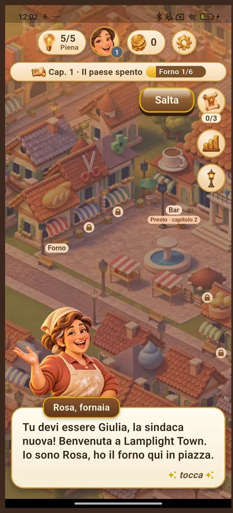
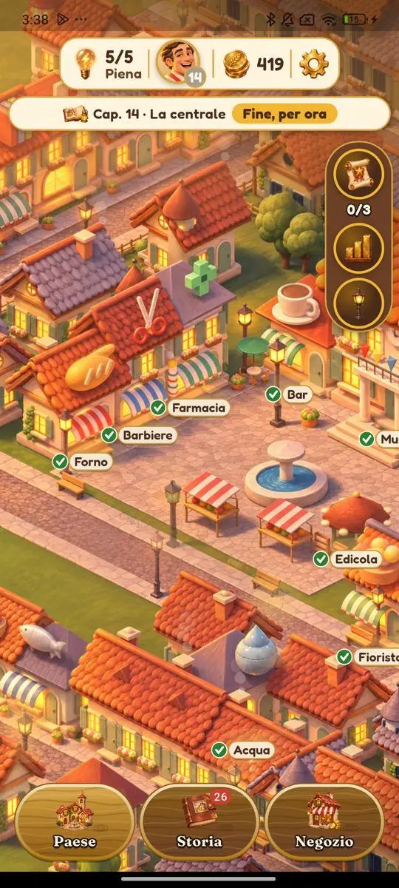
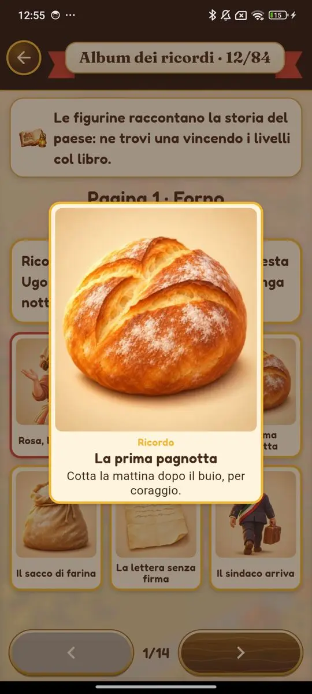

Lamplight Town
Una sera il paese si spegne e nessuno sa perché. Tu sei il nuovo sindaco: vinci i livelli, riaccendi il forno di Rosa, poi il bar, poi tutto il resto.One evening the town goes dark and nobody knows why. You're the new mayor: win levels, relight Rosa's bakery, then the café, then everything else.
Presto su Google PlaySoon on Google Play


Cosa fai in paeseWhat you do in town
Risolvi i livelliSolve levels
Scambi i pezzi, ne allinei tre, crei pezzi speciali. Ogni vittoria porta luce.Swap pieces, match three, build special pieces. Every win brings light.
Riaccendi i negoziRelight the shops
Il forno, il bar, il barbiere, la scuola: ogni strada ha i suoi livelli e la sua storia.The bakery, the café, the barber, the school: each street has its levels and its story.
Scopri cosa è successoFind out what happened
Gli abitanti sanno qualcosa sul buio. Te lo raccontano un pezzo alla volta.The townsfolk know something about the dark. They tell you bit by bit.
Riempi l'albumFill the album
Ogni capitolo della storia ti lascia una figurina: la prima è la pagnotta di Rosa.Each story chapter leaves you a card: the first is Rosa's loaf.
Potenzia la centraleUpgrade the power plant
Le monete servono per gli aiuti: martello, scambio libero, mescola.Coins buy helpers: hammer, free swap, shuffle.
Gioca quando vuoiPlay whenever
Un livello dura pochi minuti. Il paese ti aspetta, sempre al tramonto.A level takes a few minutes. The town waits for you, always at sunset.